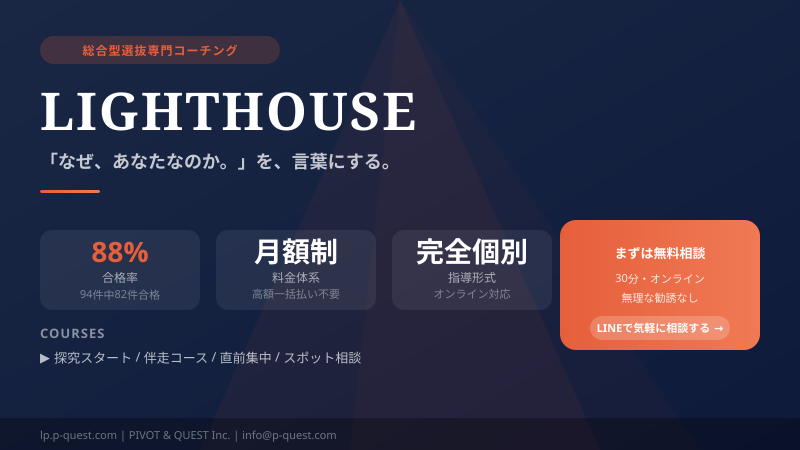

1. 総合型選抜（AO入試）で落ちる確率と受かりやすい人
ネットで「総合型選抜 落ちる 確率」や「ao入試 受かりやすい人」と検索すると様々な情報がありますが、本質は極めてシンプルです。
総合型選抜は落ちる確率が高い？
結論として、難関大では志願者が殺到し80%以上が落ちることもあります。全体平均でも約50%は不合格になります。「一般入試より簡単そう」という理由で、大学の理念（アドミッション・ポリシー）とマッチしていないのに出願する受験生が多いためです。
では、その厳しい確率の中で「受かる側」に回るには何が必要なのでしょうか。テクニックや対策量ではありません。突き詰めれば、自分の中にある問いを、自分の言葉にできているかどうか——その一点が合否を分けています。
実績がない・通信制高校・不登校からのスタートでも行けるのか？
実績がない状態からでも、通信制高校や不登校からのスタートでも合格は十分に可能です。大学側が見ているのは「過去の派手な経歴」ではなく、「なぜその経験をしたのか」「そこから得た視点を大学での学びにどう繋げるか」という思考の深さと必然性です。
総合型選抜・学校推薦型選抜・一般選抜の違い（比較表）
入試方式の違いを正しく理解することが、適切な対策の第一歩です。
| 比較項目 | 総合型選抜（旧AO入試） | 学校推薦型選抜 | 一般選抜 |
|---|---|---|---|
| 選考方法 | 志望理由書・自己推薦書・面接・口頭試問・小論文 | 推薦書・調査書・面接（評定重視） | 共通テスト・二次試験（学力筆記） |
| 求められるもの | 志望の必然性・自己分析の深さ・大学との適合性 | 評定平均（3.5〜4.0以上が目安）・学校内の実績 | 学力・得点力・試験への対応力 |
| 出願時期（目安） | 高3・6月〜9月ごろ | 高3・9月〜11月ごろ | 高3・1月〜2月（共通テスト以降） |
| 合格発表 | 11月〜12月ごろ | 12月〜1月ごろ | 2月〜3月ごろ |
| 準備開始の理想 | 高1〜2年から自己探究スタート | 高1から評定維持・課外活動実績 | 高1から学力の積み上げ |
| 向いている人 | 学力より動機・個性が際立つ。「なぜやるのか」が語れる人 | 学校生活を真面目に取り組み、評定が高い人 | 学力に自信があり、試験型の選考が得意な人 |
📌 ポイント：総合型選抜は「早く始めるほど有利」な入試です。志望理由の核となる自己探究は、1〜2年生から始めることで質が大きく変わります。「活動実績がない」「偏差値が低い」という状況でも、自己分析の深さで逆転合格した事例が多数あります。
2. 塾選びで失敗しないための「料金体系（一括か月額か）」の罠
総合型選抜の対策塾を選ぶ際、指導形式（個別か集団か）も重要ですが、保護者にとって最も深刻な問題は「料金体系」です。
大手予備校に多い「一括・買い切り型」のリスク
多くの大手AO専門塾や予備校は、入塾時にコース料金として数十万円〜100万円以上を一括（またはローン）で前払いするシステムを採用しています。この場合、「万が一子供に合わなかった」「途中で志望校が変わった」という時に、多額の投資が無駄になる心理的負担が保護者に重くのしかかります。
柔軟な「従量課金」や「月額制（サブスク）」のメリット
一方で、授業ごとに支払う「従量課金制」や、毎月一定額を支払う「月額課金制（サブスクリプション）」の塾も存在します。特に完全月額制であれば、初期費用が抑えられ、合わなければいつでも辞められるため、保護者の金銭的・心理的リスクを最小限に抑えられます。
3. 【早見表】総合型選抜の主要対策塾・サービス比較テーブル
まずは、総合型選抜を検討する上で候補に挙がる主要な塾やサービスを一気に比較します。
| 塾・サービス名 | 指導形式 | 料金体系 | 特徴・強み |
|---|---|---|---|
| 早稲田塾 | 集団授業・グループワーク | 一括払い（コース制・学費ローン可） | 業界最大手。仲間との切磋琢磨や圧倒的な情報量が強み。 |
| 総合型選抜専門塾 AOI | 個別指導＋映像授業 | 事前見積もりの一括・クレカ決済 | フルオーダーメイド。メンターが親身でAO特化のノウハウが豊富。 |
| Loohcs志塾 | 少人数・個別指導 | 在籍基本料＋従量課金（後払い） | 慶應SFC・早稲田など超難関大の合格実績に圧倒的強み。 |
| 洋々オンライン | 完全個別指導 | パッケージ料金（一括払い） | 学生ではなく、社会人プロフェッショナルによるビジネスメソッド指導。 |
| 家庭教師メガスタ | オンライン個別指導 | 月額指導料 | 全国どこからでもプロ家庭教師のAO・推薦対策が受けられる。 |
| 家庭教師のトライ | 個別指導（対面/オンライン） | 月額指導料 | 総合型選抜対策専門コースあり。圧倒的な実績とデータ。 |
| LIGHTHOUSE (Pivot & Quest) |
完全オンライン プロ伴走型自己探究 |
完全月額課金制 （サブスクリプション） |
高額な一括前払いのリスクなし。テンプレに頼らず、自分だけの「圧倒的な必然性」を抽出。 |
4. 観点別・おすすめ塾の詳細と受講生のリアルな口コミ
※ 本セクションには広告（アフィリエイトプログラム）を含みます。掲載各社への申込により当サイトが対価を得る場合があります。
早稲田塾
総合型・学校推薦型選抜における業界最大手。グループディスカッション対策など、他者と交わることで自身の考えを深めるカリキュラムが豊富です。
【ポジティブな声】「グループワークを通して仲間と切磋琢磨でき、モチベーションが維持できた。大手の情報量はやはり圧倒的」
【注意点・ネガティブな声】「講座ごとの一括払いで、合宿や直前対策などを追加していくと最終的にかなり高額な出費になった」
総合型選抜専門塾 AOI

関関同立をはじめとする有名私大から国公立まで、幅広い実績を持つAO専門塾。フルオーダーメイドのカリキュラムと親身なメンター制度が特徴です。
【ポジティブな声】「メンターさんが非常に親身で、自己分析から書類作成まで徹底的に伴走してくれたおかげで合格できた」
【注意点・ネガティブな声】「手厚い分、初期に数十万円の一括前払いが必要となり、家庭の負担感は大きかった」
個別指導・基礎学力対策におすすめのサービス
難関大・難関高校への個別指導：スタディコーチ
東大・京大・早慶など難関大合格に特化した個別指導塾。総合型選抜と並行して学力底上げを目指す方や、推薦要件のための評定アップに。
東大生によるオンライン個別指導：トウコベ
現役東大生が直接指導するオンライン個別指導。「難関大に受かった人の思考法」を学べるのが強み。総合型対策の小論文・面接対策にも活用できます。
難関校・帰国生受験にも対応：名門会オンライン
難関校受験から帰国生受験まで対応するオンライン家庭教師。海外経験や語学力を総合型選抜の強みとして活かしたい方に特に向いています。
英語力・TOEICスコアを出願要件に：スタディサプリENGLISH
英語資格スコア（TOEIC・英検）を出願要件とする大学が増えています。スタディサプリENGLISHのTOEIC対策コースで、AO出願前に英語スコアを確保しましょう。
そして、本質的な自己理解と圧倒的な低リスクを求める方へ
総合型選抜の自己探究塾 LIGHTHOUSE (Pivot & Quest)

「自分には誇れる実績がない」「まとまった初期費用を用意するのが不安」というご家庭に向けた、自己探究に特化した異色のオンライン塾です。
大手塾にありがちな「数十万円の一括前払い」のリスクを排除し、いつ辞めても良い月額課金制を採用。テクニックで実績を盛るのではなく、過去の違和感や熱中から「なぜ私がやるのか」という圧倒的な必然性を抽出します。
私たちにとって合格はゴールではありません。納得して自分の進路を選び取るまで伴走すること——それが、その先の人生でも効いてくる本当の価値だと考えています。
【受講生・保護者の声】「月額制だったので気軽に始められました。実績ゼロの娘が、対話を通して自分の本当のやりたいことを見つけ、嘘偽りない自分の言葉で難関大に合格できたのは一生の財産です」
5. 過去の生徒の逆転合格例（実績なし・通信制からの合格）
「本当に私でも行けるの？」という疑問に対し、自己探究塾LIGHTHOUSEで実際にあった過去の生徒の例を紹介します。
- 偏差値36からの慶應SFC合格：自己否定を繰り返し「自分には何もない」と思っていた生徒が、自身の人生の文脈を言語化し、圧倒的な志望理由を作り上げ合格。
- 不登校・通信制高校からのGMARCH合格：「正直者がバカを見ない社会を作る」という執念の対話を通し、不登校というハンデをそのまま志望理由の核に変え合格。
- 第一志望不合格からの新たな進路発見：合格テクニックではなく本質的な自己探究をした結果、不合格の先で本当にやりたかった建築への道を見出し、充実した大学生活を送る。
6. 答えはすでに、あなたの中に眠っている
実績の有無や、今の偏差値、通っている高校の環境は、総合型選抜の決定的なマイナスにはなりません。合否を分けるのは、あなた自身の人生から滲み出る、本物の言葉（必然性）を掘り起こせるかどうかです。
いきなり塾に申し込むのが不安な方へ
「自己探究と言われても、一人では難しそう…」
そんな方のために、無料で取り組めるワークブックをご用意しました。
📖 Quest Note — 必然性の一本化ワークブック
ペン1本あれば始められる自己探究ノート。過去の棚卸しから「なぜ私が」の一文を完成させるまでの4ステップを体験できます。
さらに、24時間対応の自己探究AIパートナー「Quest」が壁打ち相手となり、あなたの中に眠る答えを引き出します。